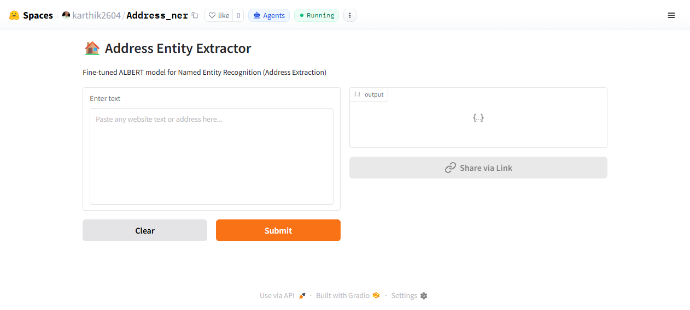

Address NER
Free-text addresses are useless to structured systems. This fine-tuned ALBERT token-classification model reads raw address strings and emits labeled address components, deployed as a public Gradio demo on Hugging Face Spaces.

01 What problem does it solve?
Address data arrives as unstructured strings in wildly inconsistent formats. Regex breaks on real-world variance; the task needs a learned model that generalizes across formats.
02 How does it work?
raw address textALBERT token classifierlabeled entitiesstructured record
- Model: a fine-tuned ALBERT model (
AlbertForTokenClassification, Hugging Face Transformers) that tags each token with an address-entity label. - Inference: long inputs are split into overlapping 512-token windows (stride 96), and entity spans are merged across windows with per-span confidence scores.
- Fine-tuned model vs. LLM call: a small trained tagger is cheaper and more predictable at inference than prompting an LLM for the same extraction.
- Deployment: published as a Gradio demo on Hugging Face Spaces where anyone can test arbitrary addresses.
03 What did it achieve?
ALBERTfine-tuned model
512 / 96window / stride
HF Spacespublic deployment
A narrow, structured extraction task served by a small fine-tuned model instead of an LLM call. Evaluation figures (dataset size, split, per-entity precision/recall) are not published yet and will be added with the training notebook.
04 Stack
ALBERTTransformersPyTorchGradioHugging Face Spaces